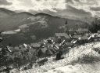

montagnes
le site - patrimoine
culture - sports
Location
saisonnière
la maison
tarifs et réservations



{kind=link}
La Bellongue vous en met plein la vue !
Bois sauvages et estives offrent en panorama un dense nuancier de verdure richement fleurie au printemps comme à l'été, un chatoyant éventail de rouges cuivrés à l'automne et la luminosité d'une blancheur pure en hiver, avec vue sur le Pic de la Calabasse, le Maubermé, le Pic du Crabère et le Mont Valier.
Ce dernier domine le pays et doit son nom à Valerius, premier évêque du Couserans, qui l'aurait gravit le premier au Vème siècle.
Promenez-vous :
- sur la rivière sous-terraine de Labouiche ;
- le long de la Bouigane (à 2 km en bas de Galey) ;
- en forêt à la sortie du village...
Observez :
- la buse ;
- le chevreuil ;
- le lièvre ;
- le lucane ;
- brebis, chevaux, chèvres et vaches paissant ;
- le loup au Parc animalier d'Orlu...
Rencontrez en haute montagne :
- la marmotte ;
- l'isard (chamois pyrénéen) ;
- le mouflon ;
- le grand tétras (coq de bruyère) ;
- le lagopède, le gypaète ;
- le desman (rat-trompette)...
Admirez :
- l'ancolie
- la digitale
- la bruyère...
Cueillez en soulane :
- cèpes, girolles, bolets et morilles
- fraises des bois, mûres, myrtilles et noisettes...
Aimer la nature c'est avant tout la respecter.
Nombre d'espèces végétales et animales sont protégées. De plus certaines variétés de champignons et baies sont toxiques voire mortelles.
N'hésitez pas à vous renseigner ou, dans le doute, contentez-vous de les regarder.
La magie des lieux tient à la qualité de préservation des espaces naturels.
Emportez avec vous une poche plastique pour ne pas semer vos déchets.
Vous pouvez également devenir éco-citoyen lors des Journées Nature ou découvrir et nettoyer les sites de montagne (renseignements au 05.61.65.01.09).
haut de page